Галерея "Скарби Північного Відродження та Іспанського Мистецтва"
Підготуваала учениця 11-Б класу Запорожець Аміна
У цій галереї ви зможете дослідити роботи "малих" голландців, таких як Ян Ван Ейк, Ієронімус Босх, Ян Вермер, Франс Халс, Пітер де Гейс та інші, а також шедеври "великих" голландців, таких як Пітер Пауль Рубенс і Рембрандт. Тут також представлені видатні твори "Золотої доби" іспанського живопису, зокрема портрети Дієго Веласкеса, а також картини і офорти Франсиско Гойї.
"Малі голландці"

Я.Ван Ейк,"Гентський вівтар"
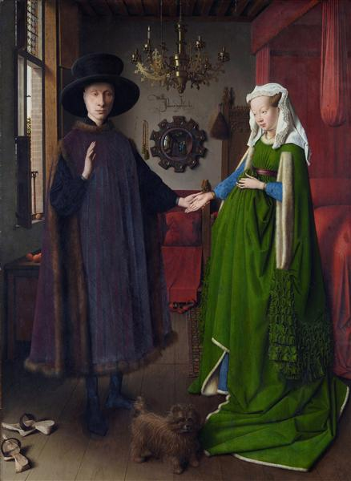
Я.Ван Ейк,"Портрет подружжя Арнольфіні"
Я.Ван Ейк,"Мадонна в церкві"
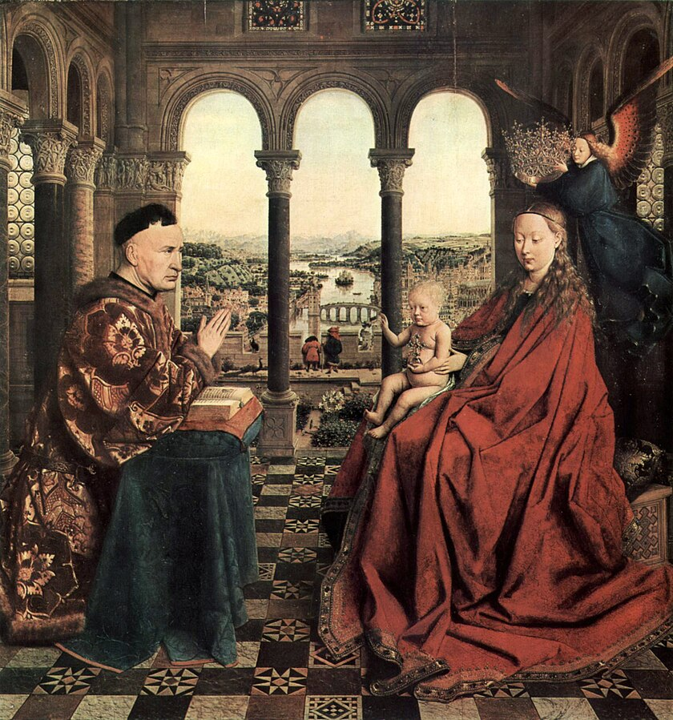
Я.Ван Ейк,"Мадонна канцлера Ролена"

І.Босх,"Сад земних насолод"

І.Босх,"Несення хреста"

Я.Вермер,"Лист від коханого"
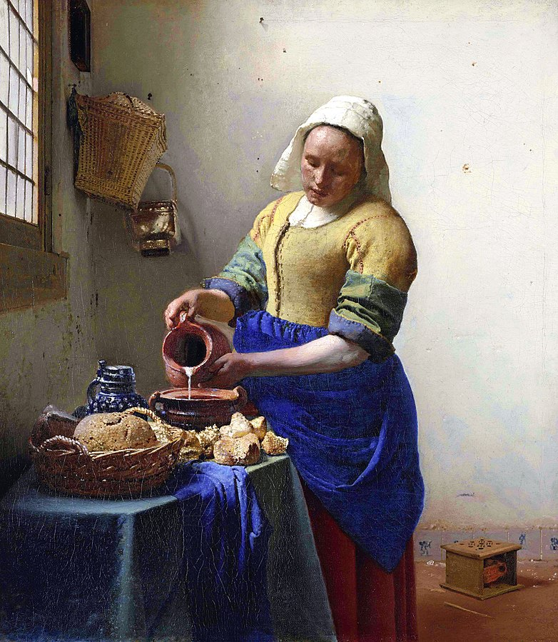
Я.Верме,"Молочниця"
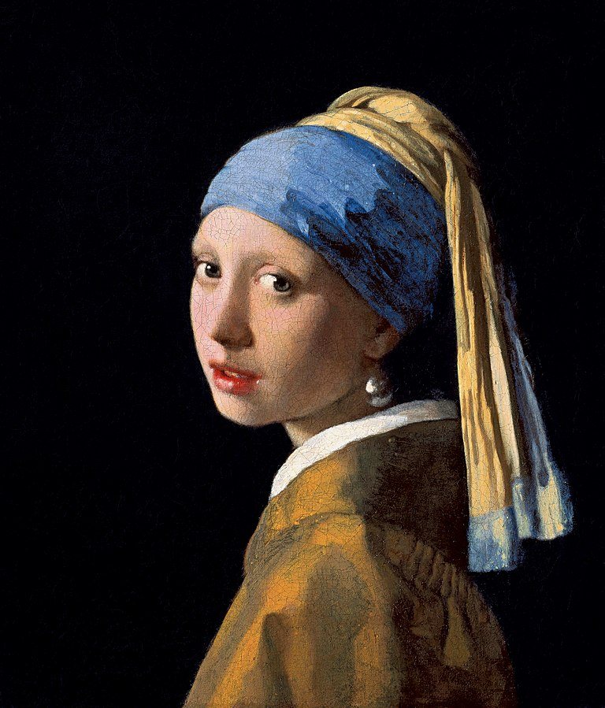
Я.Верме,"Дівчина з перловою сережкою"

Я.Верме,"Маленька вулиця"
"Великі голландці"

П.П.Рубенс,"Чотири філософа"

П.П.Рубенс,"Портрет Анни Австрійської"

П.П.Рубенс,"Святий Георгій і дракон"

П.П.Рубенс,"Прибуття Марії Медічі в Марсель"
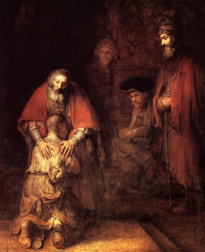
Ван Рейн Рембрандт,"Повернення блудного сина"

Ван Рейн Рембрандт,"Бенкет Валтасара"
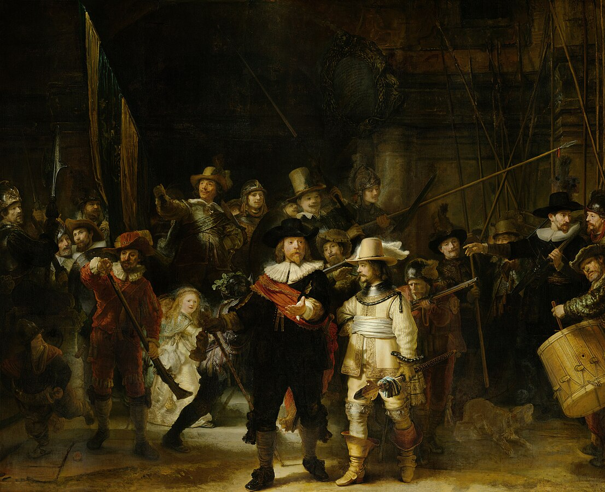
Ван Рейн Рембрандт,"Нічна варта"
"Золота доба" іспанського живопису
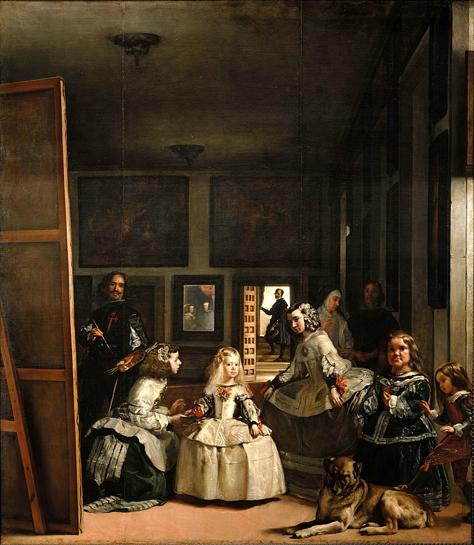
Д.Веласкес,"Фрейліни (Меніни)"
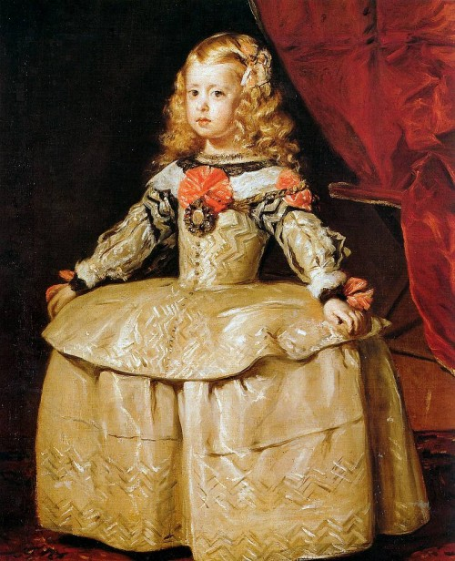
Д.Веласкес,"Інфанта Маргарита Австрійська"
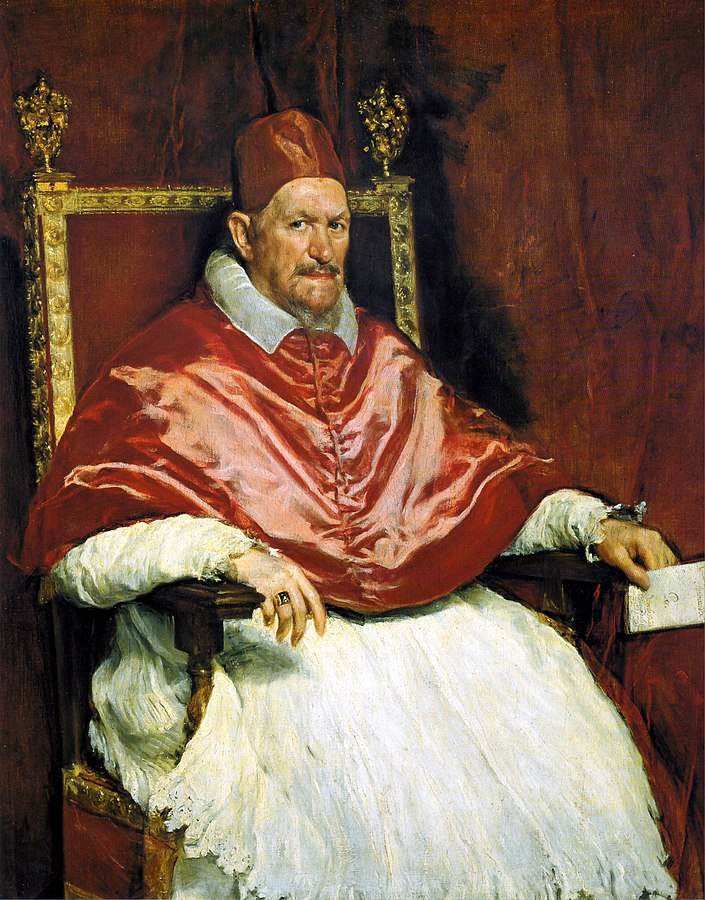
Д.Веласкес,"Портрет папи Іннокентія Х"
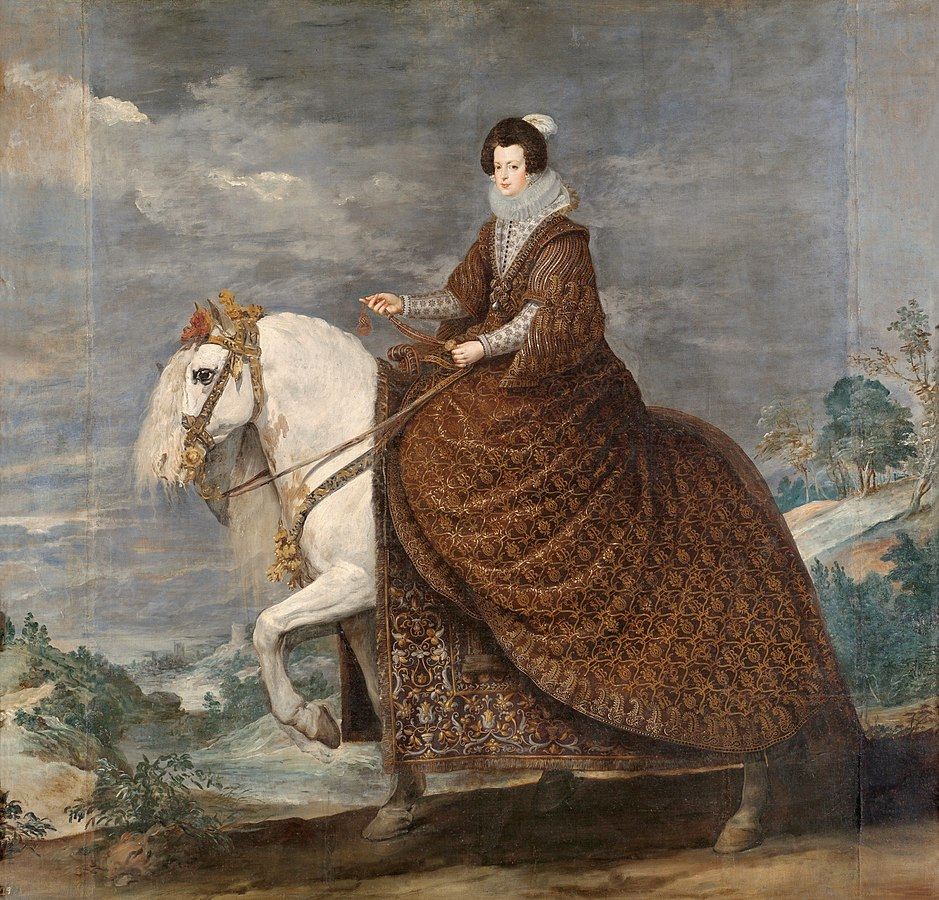
Д.Веласкес,"Кінний портрет"
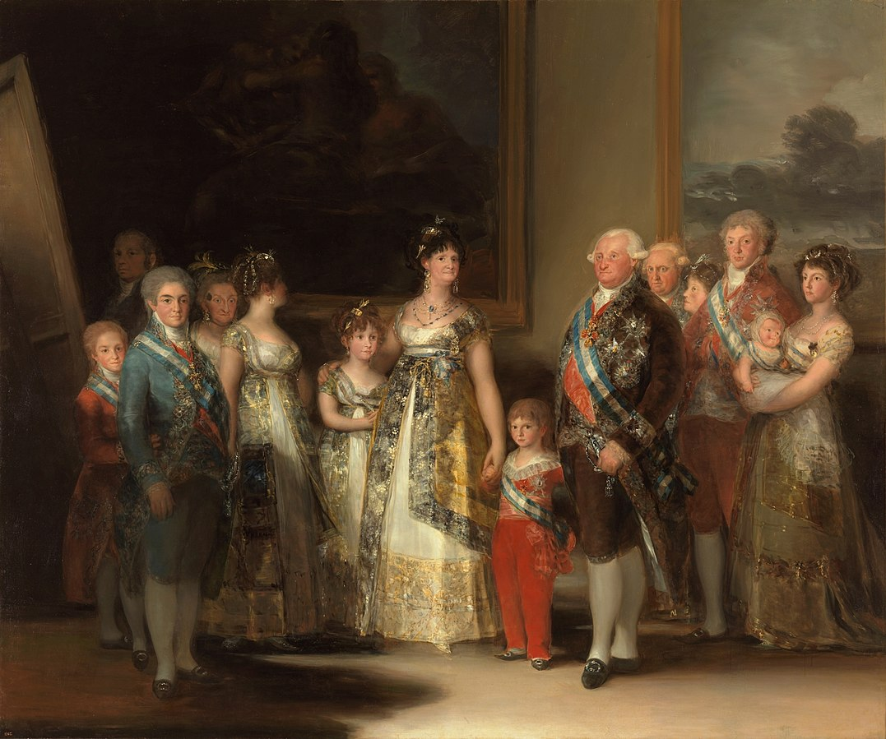
Ф.Гойї,"Родина короля Карлоса IV"
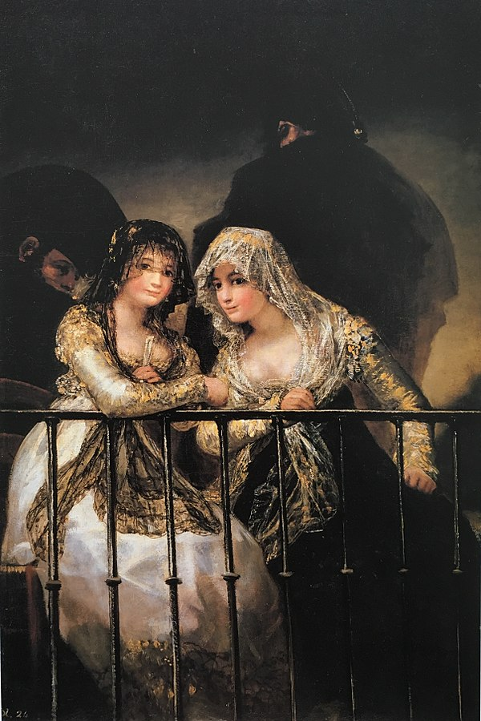
Ф.Гойї,"Махи на балконі"
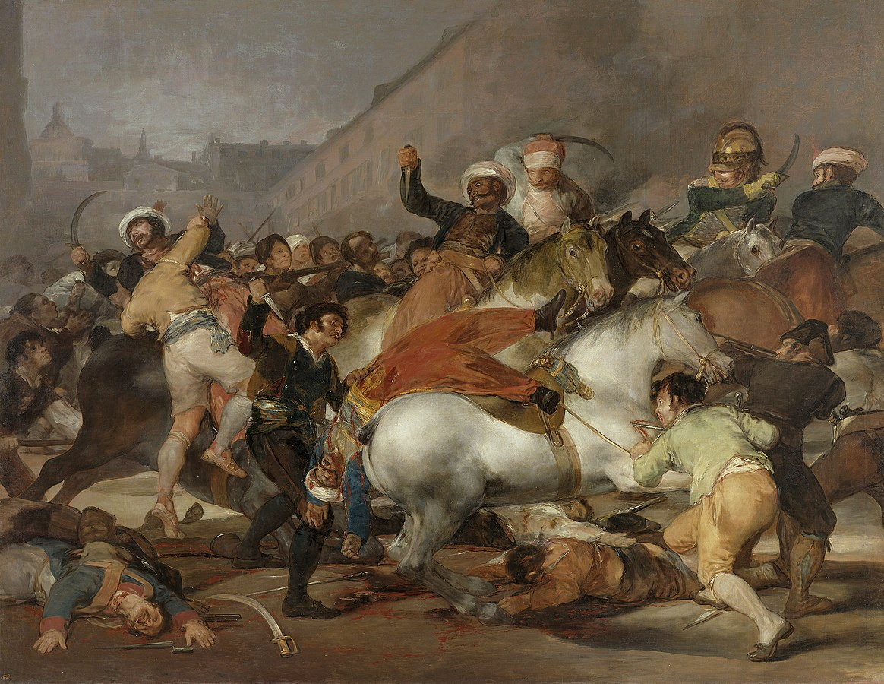
Ф.Гойї,"Повстання"
×